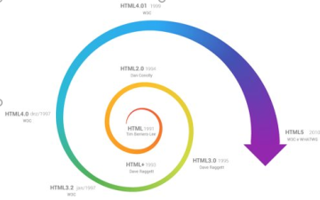

HTML (Hyper Text Markup Language) é uma Linguagem de Marcação de Hipertexto utilizada para criação de páginas da Web. Essa é a linguagem que o seu navegador (Browser) decodifica para exibir as páginas. (FERREIRA & EIS, ONLINE, p.7)
Hipertexto pode ser definido como todo o conteúdo o qual se encontra inserido em um documento para a web, sendo que sua principal característica seria a possibilidade de se interligar a outros documentos também na web. (SILVA, 2011, p.20)
O HTML é baseado no conceito de Hipertexto. Hipertexto são conjuntos de elementos – ou nós – ligados por conexões. Estes elementos podem ser palavras, imagens, vídeos, áudio, documentos etc.
Desde a invenção da web em 1992 por Tim Berners-Lee, a HTML evoluiu a cada versão lançada, sendo a versão mais atual a HTML5. (SILVA, 2011, p.21)
CSS (Cascading Style Sheets — Folhas de Estilos em Cascata) é uma extensão da HTML, uma linguagem de estilo, ou seja, fazendo o uso dessa linguagem é possível definir como o conteúdo dos elementos HTML serão apresentados na página da Web. Essa extensão foi incorporada à linguagem HTML a partir de sua quarta versão em 1997.
O CSS3 (que vamos aprender) é a segunda versão da linguagem CSS. Separar o conteúdo do documento HTML de sua formatação.
Forma antiga de se formatar conteúdos: exemplor <.font size=“12” color=“blue”>TEXTO AZUL TAMANHO 12 <./font> obs(sem os pontos no começo do font e /font)
Ou seja, se você tivesse 10 tipos diferentes de fontes em uma mesma página, então teria de fazer esta formatação 10 vezes. Até que fazer isto em uma só página, tudo bem, mas se o site tivesse 100 páginas então seria muito trabalhoso manter e alterar estas fontes, não acha?

O W3C (World Wide Web Consortium), criado em outubro de 1994 por Tim Berners-Lee, é um consórcio internacional formado por empresas, instituições, pesquisadores, desenvolvedores e público em geral. A finalidade desse consórcio é desenvolver a web a seu potencial máximo, criando normas, especificações e padronizações que se aplicam aos mais diversos segmentos e setores da web. (W3C, ONLINE)
Uma curiosidade a respeito da evolução do HTML é que em um workshop da W3C em 2004 as empresas Mozila e Opera apresentaram uma proposta para evolução do HTML4 para o HTML5, mas a W3C se recusou a dar continuidade a essa ideia.
Mas pouco tempo depois, as empresas Fundação Mozila, Apple e Opera anunciaram a criação de uma organização que visava a evolução do HTML, tal organização foi denominada WHATWG, a qual passou a desenvolver a linguagem XHTML.
A imagem a seguir se trata sobre a w3Schools explicando como funciona o css